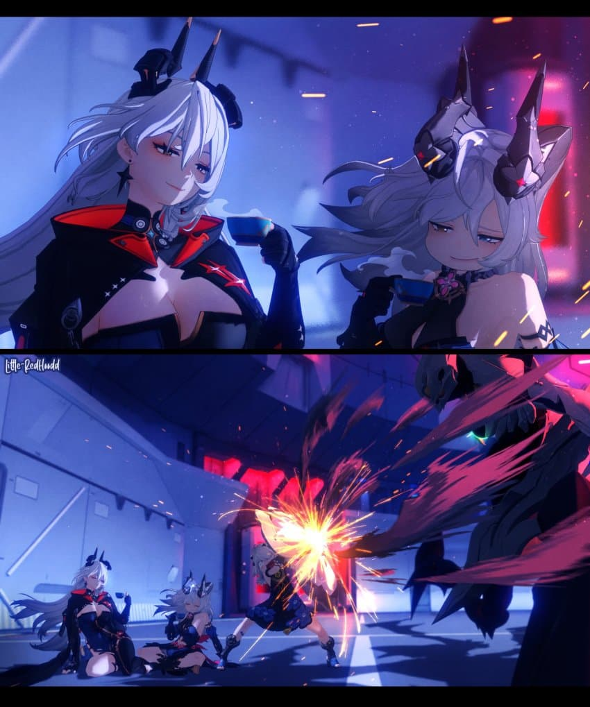

공식이 인정하는 엄마.

스토리에 뜬금없이 등장한 낳아준 엄마.

키워준 엄마.

갑자기 엄마만 한 업데이트에 세 명이나 등장시키는 젠레스 존 제로.

공식이 인정하는 엄마.
스토리에 뜬금없이 등장한 낳아준 엄마.
키워준 엄마.
갑자기 엄마만 한 업데이트에 세 명이나 등장시키는 젠레스 존 제로.
마망 스페셜 ㅗㅜㅑ
애미 많음?
예
애미가 셋이라 좋으시겠어요콘
애비셋이 여포니까 남포라해야하나
곧 콜라보로 다른겜 엄마도 나옴
와 마망
오빠 : 어흐, 합법 마망 3 겟또
아가밖에 안 보이는데?